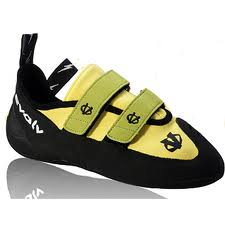
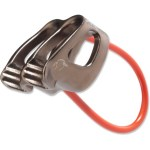
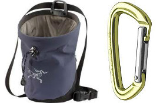
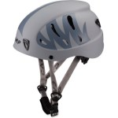

Equipment
What to wear and what equipment you need is often the first question. Running gear can vary from nothing but shoes and clothes to sweat in to high tech watches, heartrate monitors and fancy socks. It really is up to the individual so make it fun, experiment with different things or don't, it's all up to you. The only thing you need for sure is a good pair of running shoes.
That said, here are some of my tips after years of casually running.
Shoes
When you first start climbing you can wear a pair of tennis shoes for the basic routes. If you wish to progress to harder routes, though, you will need a pair of specialized climbing shoes. These shoes are usually worn very tight and have a slight curve to them. They allow you to put your weight on a small part of your foot and remain stable. They also have a textured sole that is a bit more "sticky," allowing you to plant your foot against the wall for balance and stability, even without a hold.
Rock climbing shoes are generally either leather or a synthetic suede-like material. They come in a variety of styles. Very technical shoes tend to have a rigid sole and a pronounced curve. They look painful because they are! As a beginner, you will probably want a shoe with a softer, more flexible sole.
These shoes come in standard men and women's shoe sizes. However, most climbers prefer tight-fitting shoes and will buy a size or so down from their regular shoe sizes. As a rule, shoes marketed to women are narrower than those marketed to men. If you have a very narrow foot, stick to women's shoes; if you have a wide foot buy men's shoes. They generally look very similar.
I strongly recommend renting shoes at first, until you find a size and style that works for you. Shoes are an excellent piece of gear to buy used. Because they are such a personalized piece of gear, many people buy a pair, wear them once or twice, and then sell them because they do not like the fit. If you do buy new shoes, expect to pay between $70 and $100 for a pair of starter shoes.
Clothes for the Weather
A belay device is a small mechanism that is used to connect a climber and their belayer. Some can also be used to rappel. A belay device serves a few primary purposes:
- It securely attaches a belayer to their climber.
- It provides extra friction, allowing a belayer to quickly stop a fall. Some more complicated devices also have automatic breaking systems.
- It compensates for weight differences between a climber and belayer.
- It allows a belayer to lower a climber smoothly and at a safe speed.
There are several different types of belay devices. An ATC (pictured) is the cheapest and simplest. They are light and easy to use. A Cinch or GriGri is more expensive and heavier, but has a built-in automatic braking system. Any climbing gym or retail store should have employees that can show you the different models and how they work.
Belaying is a simple skill that most people can pick up rapidly. However, it is very important that you learn to belay properly. A mistake when belaying can mean death or serious injury for your climber. Most gyms offer classes in belaying. If you work with an experienced, well-trained climber, they can generally show you how to use a belay device properly. All gyms require that you pass a test in order to belay climbers at that gym.
Belay devices are life-saving safety gear. Never buy a used belay device. If the device was mistreated, it may be damaged in a way that is not visible to the naked eye. Additionally, if you ever drop your belay device from a height, or notice any signs of cracking or metal fatigue, stop using it immediately. An ATC is very inexpensive--about $20--so there is no reason to economize. An auto-braking device will be closer to $100.
Music device
Like Olympic gymnasts on the parallel bars, climbers need to get a good grip. At any gym, you will notice climbers chalking their hands before they start. Climbers store their chalk in a drawstring bar they can attach to their harness. They are not a necessity, but they are helpful. Chalk bags are inexpensive, $15-$20. They are often sold as part of a package deal with a harness.
You'll attach your chalk bar to your harness with a carabiner. Your belayer will also use a carabiner to anchor him or herself to the belay device. Carabiners are sturdy metal links with a gate, or opening, on one side. Most have a locking mechanism of some kind, to keep them from opening accidentally. Larger weight-bearing carabiners are around $10-$15. You should have a least two. You can buy smaller carabiner for attaching gear to your belt for just a few dollars.
Socks
Among climbers, these are known as "brain buckets." A helmet does exactly what you'd think: it protects your head from impact. Impact can come from you hitting a rock or a rock hitting you. The second is actually fairly common outdoors, where falling rocks are a danger. As an added bonus, it protects you from bird droppings.
A retail climbing helmet is generally very light and comfortable. The climbing helmets that most gyms rent out are designed to be sturdy, and are usually much heavier and less comfortable. Either way, you want a helmet designed and rated for climbing. A bike helmet is not sufficient--they are designed to take impacts from a different direction. (They also tend to have holes, which makes them less effective protection from debris and bird droppings.)
I don't wear a helmet when climbing in a gym; most adults don't. If you are climbing with an incautious or clumsy child, it might be a good idea to have them wear one, though. If you go climbing outdoors, you do need a helmet.
Climbing helmets are usually adjustable to a wide range of sizes. Unless you have a very small head (or really hate the available colors), buy a men's or unisex helmet. The helmets marketed to women tend to be less adjustable, and don't have any other benefits. Be be very careful if you buy a used helmet, and inspect it for any signs of damage. If you take a fall and impact your helmet, you should probably replace it. A helmet costs about $60.